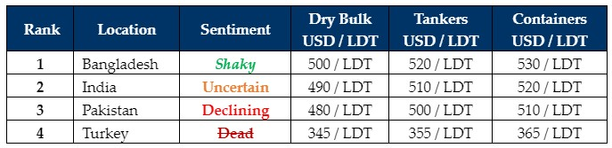

inWeekly Demolition Reports26/08/2024

As the world finally witnesses the first signs of aggression emanating in Northern Israel early Sunday AM hours where, on the back of intelligence thatHezbollah was expected to imminently launch several thousand unguided missiles that were aimed at Northern and Central Israel, the Israeli Air Force counterstruck several hundred targets housing thousands of missiles in Lebanon, in a raid that is now being labeled as one of the largest Israeli incursions in recent times. While Hezbollah did launch a few hundred missiles and 1 Israeli casualty was sadly reported, tensions remain high in the region as on the one side, Israel awaits an Iranian attack and on the other, Indian PM Narendra Modi marks his first visit to Ukraine amidst their surprise resurgence in the war against Russia and Ukraine defiantly takes control of larger territory in the Kursk region. Finally, Houthis detonated another (Greek controlled) Tanker in the Red Sea marking another sad and tumultuous week for shipping. Impressively, while the Houthi attack was being planned and executed in the South, IDF intelligence had already uncovered the imminent Hezbollah threat in the North and the Israeli Air Force was immediately mobilized to conduct pre-emptive strikes, which is telling of their military intelligence capabilities and one that seems to be stretched of late.
On the ship recycling industry front, Ship Owners & Cash Buyers continue to struggle with the ongoing tonnage shortage as sub-continent ship recycling markets continue down their current trajectory, with very little (if at all) to report in terms of sales, pricing, or anything other than negativity permeating across the industry on the back of a short supply of vessels and global economies that remain shaky. As such, ship recyclers continue to chip away at signs of a return to normality as vessel prices dip closer to USD 450/LT and nervy markets receive no respite in the face of declining steel prices, budget distresses, strained political situations, and even the weather.
Speaking of the weather, after the deadly riots that saw the recent abdication of PM Sheikh Hasina and the military & key student bodies maintaining peace through the unstable situation, the incessant rains have drenched much of the country over the week causing Bangladesh to suffer through yet another tragedy this week, as tragic floods ravage much of the country. India too remains lackluster as the import of cheaper Chinese product continues to weaken recycling sentiments, both here and in Pakistan where Gadani buyers seem oddly content to wait and watch market developments before committing afresh on the slim pickings of vessels that do come available. Finally, Turkey at the far end remains dead as ever and overall, through August and indeed much of these summer months, minimal vessel offerings have become the hallmark of an ailment that continues to severely infect our industry.
For week 34 of 2024, GMS demo rankings / pricing for the week are as below.

📄 Download PDF: Ship-recycling-market-insight-Week-33-8-16-2024-Glum_Trajectory.pdfSource: GMS,Inc.https://www.gmsinc.net/gms_new/index.php/web